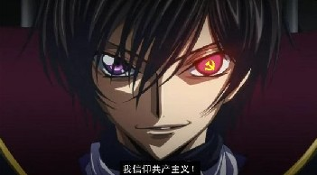
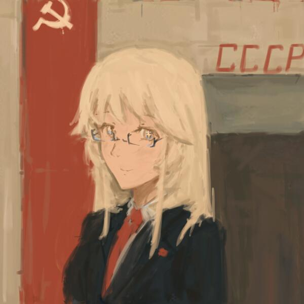
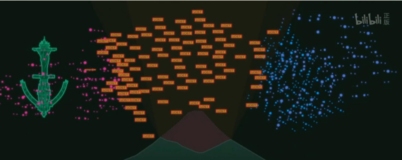

【建议阅读】本文是怎么从白学感情文转变为革命文的
本杂谈主要讲述R2的主旋律和为什么是这样的主旋律
众所周知，在过去的两年里，作者是个不谙世事的纯洁的仙女。对政治尤其不敏感，共产被用作gaochao的谐音，资本主义地带指某处肥美的赘肉，德国工人党指nazi，党魁（首）则指的是nazi头，可以说是非常的……非常的那什么了。
但是呢，自去年12月起，这种情况发生了变化。当时我困惑于R2到底怎么写，才能创造出美好世界。毕竟小仙女我是理科生，对社会科学的了解极其有限……
直到那天，有人给我普及了资本主义和共产主义的基本知识，并给了我中文马克思文库的网址让我去读毛选……
我就豁然开朗了。
所以：
.
.
爱尔娜身为王女需要一块封地，鲁鲁修世界观的布属EU又恰好差不多就是俄国的土地，简直完美！
以下是额外设定集：
①鲁鲁修世界观里西方科学发展相关的事件推迟110年，即第一次工业革命发生于19世纪七十年代《资本论》于CG世界1977发表，巴黎公社成立于1981年。
弗拉基米尔·伊里奇·列宁同志出生于1980年（死亡时间剧情需要型提前，已与2017年去世）
约瑟芬·维萨里奥诺夫娜·斯妲琳同志出生于1988年，健在。
菲莉柯丝·埃德蒙多耶夫娜·捷尔任斯卡娅同志出生于1987年，健在。
②俄国历史上没有发生十月革命，至2018年，中华联邦和俄国尚未完成工业化，虽然能生产机甲，坦克，但依旧属于农业国。至2018年，和布国在欧洲土地上战斗的国家是农业国沙皇俄国。（但已有俄共）
.
③坦克打不过机甲是因为火药，燃料，材料学的一些原因，【现在】火药，燃料和材料学正在技术革命中，部分【已】在实验室成熟，但尚还没有被广泛运用到军用领域。
.
④CG世界的一分钟有600秒（大雾。之所以有这么愚蠢的设定，是因为R1R2之间只有一年，一年对于现实世界来说，显然太短。不足以让一个苏维埃政权稳固，不足以培养起白区的红色势力，不够石油工业的发展，不足以让农业国沙俄变成钢铁苏维埃，但十年勉强可以。我是个在细枝末节上相对而言，比较追求真实的作者。可动画毕竟是动画，更何况还是大河内的动画，有些东西圆不过来，就只能推脱到“原作就是这么设定”的上了。
原作世界观里，R1开始时（2017年），布国军队的主战机甲还是三代格拉斯哥，纯血派的高层橘子叔等人才有能驾驶四代机甲桑德兰，五代机甲只有柯内莉亚和她的亲卫队才有。而在R2（2018年）时，布国已经更新换代到机甲都能上天了……
.
⑤中华联邦和共产主义没有半点关系，只是中华联邦用过一个“均富”的口号。百度百科对中华联邦的介绍是1608年中华联邦进入电气时代，1726年发现中东石油，【所以】侵入中东。从动画表现来看，这种介绍纯属扯淡。不管原作是不是这么设计的，本文一律不采纳。
中东地区并不属于中华联邦的版图。石油没有那么早被运用，中华联邦是个封建农业大国，进行过现代化改革，实际上和清末差距不大，区别在于，由于西方国家也烂的很，国内的进步青年并没有找到什么思想能够救中国。而伟大的革命领袖李德胜出生于2003年，现在还在韶山私塾读《论语》、《孟子》、《左传》，正读到了第七个年头。
.
⑦从正传动画来看，CG世界没有地雷，没有现代化战争，没有现代化战争理论，（此处可以有主语大河内）对战争的理解停留在古罗马长枪盾牌兵方阵时期，打仗比的是将领的勇武无双。连排队枪毙的水平都没达到（还记得半月罗汉阵，北斗七星阵吗？）。部队展开宽度？纵深？炮火覆盖？联合打击？多兵种协同？不存在的。
.
让我们来看一看布国军队【机甲】的密度
图中的山是富士山，只有3776多米高。可以推断双方参与决战的机甲密集在一个3km x 3km x3km大小的空间里。这真的是欺负互相都没有有杀伤力的火炮和机炮啊。
这意味着什么呢？意味着一只由三千架（十个十乘三十的方阵）格罗斯特组成的军团（考虑到纳粹德国最阔的时候，一个装甲师最多只有324辆坦克，美帝最多也不会超过五百两，我们有理由相信这只军队的编制至少等同于一个集团军/军团），会首先在红军的第一轮炮火打击下死伤过半，如果指挥官幸运的阵亡了，残存的军队溃散了。那么这只军队甚至没法有组织的投降，红军需要话不少时间像抓一千头猪一样的把剩下的散兵游勇一个个消灭。如果指挥官不幸的没有阵亡，士兵们也仍有斗志，那么再来一轮炮火覆盖，这仗就结束了。
毕竟，步兵可以找散兵坑，机甲上哪藏去？你总不能指望向动画里那样，机甲展开防空弹幕，把人家的炮弹给打爆在天上吧
.
⑧关于编制
动画是大河内写的，所以不可避免的将别的国家的战术单位冠以“组”“中队”“师团”这样日本特色的命名，这里固定一下称谓（和现实及动画均有少量出入，属于个人设定）。第一个斜杠前是日本方面的叫法，第一个斜杠后是鲁鲁修的黑色骑士团和其他地区的叫法，第二个斜杠后是苏维埃政权的叫法。
组/班/班
小队/排/排
中队/连/连
大队/营/营
联队/团/团
师团/师/师旅团/旅/旅（与师在编制上同级，但人数较少）
军团/集团军/集团军
方面军/集团军群/方面军
备注：在同一个编制下，如师级，一般日本方面的师团人数＞其他国家的一个师＞苏维埃的一个师
用法：日本人说布国人打进东京了，会说敌人有四个师团，有四万人，当被问及番号，则会用第21师，第12师，第11师，第1师。布国人说日本人打进东京了。有4个师的兵力，八万人，番号则是“第一一七师团，第一一九师团，第二师团，第三师团”
⑨原作R1的鲁鲁修真的只是一个孩子，一个眼光和思想受制于大河内的孩子。即便放在动画这个载体里，他的心智都只能说是出众，而说不上成熟。放在我这样略有现实感的书中就更只是孩子了。所以他需要成长，需要脱离大河内特色的中二幼稚盲动。
.
备注1：以上均只是额外设定集，没提到的暂时按照动画说的来。有需要再改设定。
备注2：我不是军迷，并且对军事不甚感兴趣。为了追求尽量的真实，我会学习一些军事方面的知识，但远远不可能达到军宅的水平。所以关于日后军事方面的描写，请不要太苛求我